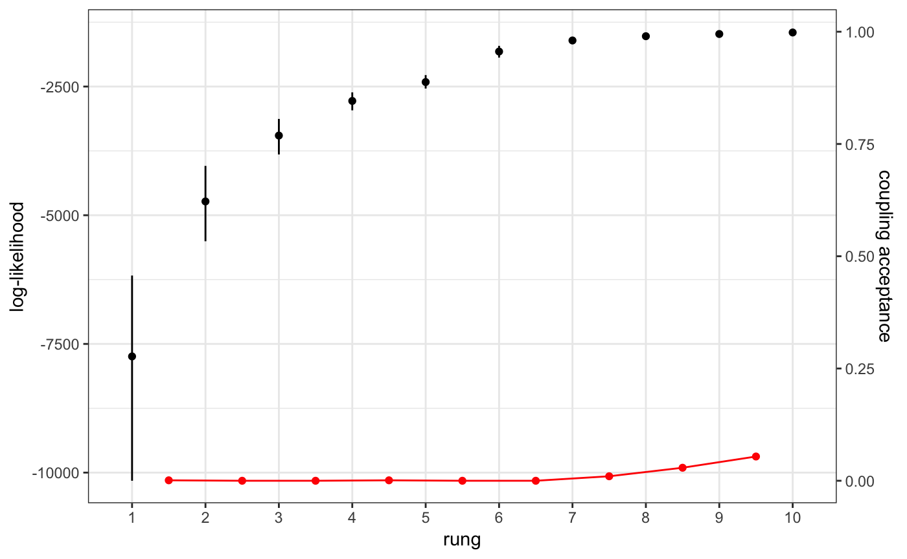
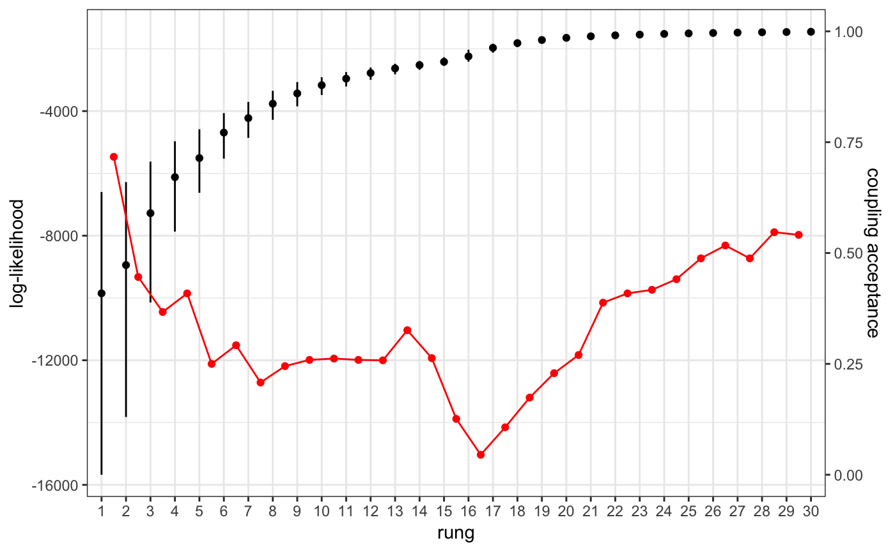

ensuring-good-mixing.Rmd# simulate data
mysim <- sim_data(data_format = "biallelic", n = 100, L = 24, K = 3)# create project and bind data
myproj <- malecot_project()
myproj <- bind_data_biallelic(myproj, df = mysim$data, ID_col = 1, pop_col = 2)# create parameter set
myproj <- new_set(myproj)# run thermodynamic MCMC
myproj <- run_mcmc(myproj, K = 3, burnin = 1e4, converge_test = 1e2,
samples = 1e3, rungs = 10, pb_markdown = TRUE)## Running MCMC for K = 3
## Burn-in phase
##
|
|=================================================================| 100%
## converged within 200 iterations
## Sampling phase
##
|
|=================================================================| 100%
## completed in 2.55983 seconds
##
## Processing results## Total run-time: 2.95 seconds# plot coupling rates
plot_coupling(myproj, K = 3)
# run thermodynamic MCMC
myproj <- run_mcmc(myproj, K = 3, burnin = 1e4, converge_test = 1e2,
samples = 1e3, rungs = 30, pb_markdown = TRUE)## Running MCMC for K = 3
## Burn-in phase
##
|
|=================================================================| 100%
## converged within 300 iterations
## Sampling phase
##
|
|=================================================================| 100%
## completed in 7.68763 seconds
##
## Processing results## Total run-time: 8.07 seconds# plot coupling rates
plot_coupling(myproj, K = 3)